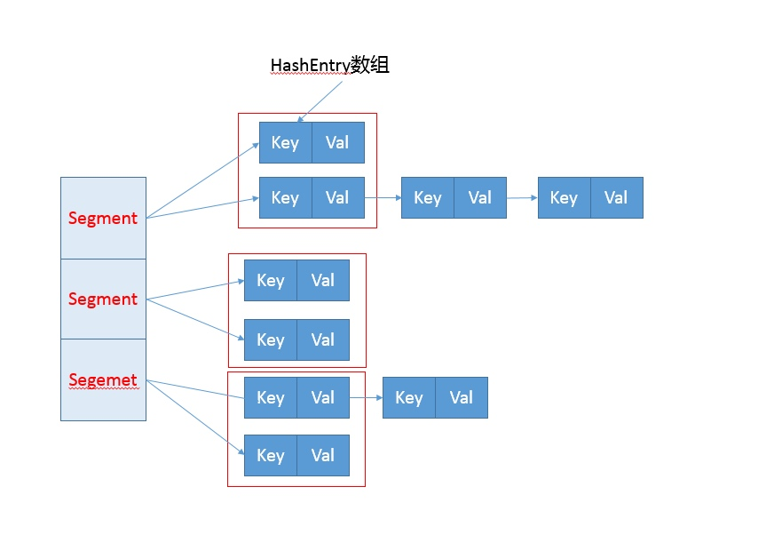

线程不安全的情况下使用Map,可以使用ConcurrentHashMap,内部封装了锁和各种数据结构来保证访问Map是线程安全的
ConcurrentHashMap 设计演化
1.7 设计
- 分离锁：将内部进行分段，里面是HashEntry数组，Hash相同的使用链表形式存放
- HashEntry内部使用了volatile修饰的value字段来保证可见性，利用不可变对象的机制改进利用了Unsafe提供的底层能力
内部结构

- Segment的数量有 concurrentcyLevel 决定，默认16
get源码分析
get操作需要保证可见性，不需要太多的同步操作逻辑
public V get(Object key) {
Segment<K,V> s; // manually integrate access methods to reduce overhead
HashEntry<K,V>[] tab;
int h = hash(key.hashCode());
//利用位操作替换普通数学运算
long u = (((h >>> segmentShift) & segmentMask) << SSHIFT) + SBASE;
// 以Segment为单位，进行定位
// 利用Unsafe直接进行volatile access
if ((s = (Segment<K,V>)UNSAFE.getObjectVolatile(segments, u)) != null &&
(tab = s.table) != null) {
//省略
}
return null;
}
put源码分析
put操作首先通过二次Hash解决Hash冲突问题，然后以Unsafe调用方式直接获取Segment，然后进行安全的线程操作
public V put(K key, V value) {
Segment<K,V> s;
if (value == null)
throw new NullPointerException();
// 二次哈希，以保证数据的分散性，避免哈希冲突
int hash = hash(key.hashCode());
int j = (hash >>> segmentShift) & segmentMask;
if ((s = (Segment<K,V>)UNSAFE.getObject // nonvolatile; recheck
(segments, (j << SSHIFT) + SBASE)) == null) // in ensureSegment
s = ensureSegment(j);
return s.put(key, hash, value, false);
}
put 核心代码
final V put(K key, int hash, V value, boolean onlyIfAbsent) {
// scanAndLockForPut会去查找是否有key相同Node
// 无论如何，确保获取锁
HashEntry<K,V> node = tryLock() ? null :
scanAndLockForPut(key, hash, value);
V oldValue;
try {
HashEntry<K,V>[] tab = table;
int index = (tab.length - 1) & hash;
HashEntry<K,V> first = entryAt(tab, index);
for (HashEntry<K,V> e = first;;) {
if (e != null) {
K k;
// 更新已有value...
}
else {
// 放置HashEntry到特定位置，如果超过阈值，进行rehash
// ...
}
}
} finally {
unlock();
}
return oldValue;
}
- ConcurrentHashMap 会获取再入锁，以保证数据一致性，Segment本身基于ReentrantLock 扩张实现，在并发修改期间是线程安全的
- 进行重复性扫描，确定key是否在数组中，以此来决定是更新还是新增操作
- 扩容是对Segment进行扩容
size
ConcurrentHashMap 通过重试机制（RETRIES_BEFORE_LOCK，指定重试次数 2）试图获取可靠值，如果没有变化则返回，否则进行加锁操作
1.8 设计
- 内部仍然保持Segment，仅仅是为了保证序列化的兼容性，不再有结构作用
- 初始化改为lazy-load方式
- 数据存储利用volatile保证可见性
- 使用CAS操作，特定场合下进行无锁操作
- 使用Unsafe和LongAdder 之类的底层，进行极端情况的优化
内部结构
- 内部红黑数被拆分成两块,TreeNode负责维护属性和查找功能，TreeBin维护红黑树的结构，并负责红黑树的加锁和解锁
- 新增转移节点 ForwardingNode 扩容时会用到，通过判断该节点，保证线程的安全性
static class Node<K,V> implements Map.Entry<K,V> {
final int hash;
// 不可变
final K key;
// 保证可见性
volatile V val;
volatile Node<K,V> next;
// …
}
get方法
public V get(Object key) {
Node<K,V>[] tab; Node<K,V> e, p; int n, eh; K ek;
// 计算hashcode
int h = spread(key.hashCode());
//不是空的数组 && 并且当前索引的槽点数据不是空的
//否则该key对应的值不存在，返回null
if ((tab = table) != null && (n = tab.length) > 0 &&
(e = tabAt(tab, (n - 1) & h)) != null) {
// 槽点第一个值和key相等，直接返回
if ((eh = e.hash) == h) {
if ((ek = e.key) == key || (ek != null && key.equals(ek)))
return e.val;
}
// 如果是红黑数或者转移节点，使用相应find方法
else if (eh < 0)
return (p = e.find(h, key)) != null ? p.val : null;
// 如果是列表则遍历
while ((e = e.next) != null) {
if (e.hash == h &&
((ek = e.key) == key || (ek != null && key.equals(ek))))
return e.val;
}
}
return null;
}
put方法
- 如果数组为空初始化，初始化完走 2
- 计算当前槽点有没有值，如果没值CAS继续创建，失败继续自旋直到成功，槽点有值走 3
- 如果槽点是转移节点，则一直自旋等待扩容完成后再走 4
- 槽点有值锁定当前槽点，保证线程安全，添加到列表的结尾或者是红黑树
- 新增完后判断是否需要扩容，如果需要扩容则去扩容
final V putVal(K key, V value, boolean onlyIfAbsent) {
// key 和 value 不允许为空
if (key == null || value == null) throw new NullPointerException();
// 计算hash
int hash = spread(key.hashCode());
int binCount = 0;
for (Node<K,V>[] tab = table;;) {
Node<K,V> f; int n, i, fh;
// table 为空进行初始化
if (tab == null || (n = tab.length) == 0)
tab = initTable();
// 当前索引位置没有值直接创建
else if ((f = tabAt(tab, i = (n - 1) & hash)) == null) {
// CAS 在当前位置创建新元素，当 i 为空是才能创建成功结束自旋，否则继续自旋
if (casTabAt(tab, i, null,
new Node<K,V>(hash, key, value, null)))
break; // no lock when adding to empty bin
}
// 当前节点是转移节点，等待帮助扩容
else if ((fh = f.hash) == MOVED)// 扩容节点的Hash 值都是 MOVED
tab = helpTransfer(tab, f);
// 槽点有值
else {
V oldVal = null;
// 锁定当前槽点
synchronized (f) {
// 再次判断当前节点有没有被修改
if (tabAt(tab, i) == f) {
// 链表
if (fh >= 0) {
binCount = 1;
for (Node<K,V> e = f;; ++binCount) {
K ek;
// 有值直接返回
if (e.hash == hash &&
((ek = e.key) == key ||
(ek != null && key.equals(ek)))) {
oldVal = e.val;
if (!onlyIfAbsent)
e.val = value;
break;
}
Node<K,V> pred = e;
// 把元素添加到列表最后
if ((e = e.next) == null) {
pred.next = new Node<K,V>(hash, key,value, null);
break;
}
}
}
// 红黑树
else if (f instanceof TreeBin) {
Node<K,V> p;
binCount = 2;
if ((p = ((TreeBin<K,V>)f).putTreeVal(hash, key,value)) != null) {
oldVal = p.val;
if (!onlyIfAbsent)
p.val = value;
}
}
}
}
// 新增节点成功
if (binCount != 0) {
// 是否需要转为红黑树
if (binCount >= TREEIFY_THRESHOLD)
treeifyBin(tab, i);
if (oldVal != null)
return oldVal;
// 基本不会走到，槽点已经上锁，只有链表或者是红黑树新增失败才会走到，但是二者新增又都自旋
break;
}
}
}
// check 是否需要扩容
addCount(1L, binCount);
return null;
}
put 操作如何保证线程安全
数组初始化时的线程安全
这是一个典型的 CAS 使用场景，利用 volatile 的 sizeCtl 作为互斥手段：如果发现竞争性的初始化，就 spin 在那里，等待条件恢复；否则利用 CAS 设置排他标志。如果成功则进行初始化；否则重试
// 初始化table, 通过 sizeCtl 的变量赋值保证数组只能初始化一次
private final Node<K,V>[] initTable() {
Node<K,V>[] tab; int sc;
// 通过自旋保证初始化一定能成功
while ((tab = table) == null || tab.length == 0) {
// 小于 0 代表有线程正在初始化，释放当前CPU的调度权，重新发起锁竞争
if ((sc = sizeCtl) < 0)
Thread.yield(); // lost initialization race; just spin
// CAS 赋值当前只能有一个线程在初始化，-1代表只能有一个线程初始化，保证初始化安全性
else if (U.compareAndSwapInt(this, SIZECTL, sc, -1)) {
try {
// 双重检测 table 是否为空
if ((tab = table) == null || tab.length == 0) {
// 进行初始化
int n = (sc > 0) ? sc : DEFAULT_CAPACITY;
@SuppressWarnings("unchecked")
Node<K,V>[] nt = (Node<K,V>[])new Node<?,?>[n];
table = tab = nt;
sc = n - (n >>> 2);
}
} finally {
sizeCtl = sc;
}
break;
}
}
return tab;
}
新增槽节点值时的线程安全
- 通过自旋保证一定可以成功 for (Node
- 当槽点为空时，通过CAS新增
- 当槽点不为空时，锁住当前节点
- 红黑树旋转时，锁住红黑树根节点，保证同一时刻，被一个线程旋转
扩容时线程安全
- 首先需要老数组的只拷贝到新数组中，从数组的末尾开始拷贝
- 拷贝时将原数组的槽节点锁住，保证原数组槽点不能操作，成功拷贝到新数组后，把原数组槽节点复制为转移节点
- 这是如果有新数据正需要put到此槽节点时，发现是转移节点，就会一直等待，所以在扩容完成之前，该槽点对应的数据是不会发生变化的
- 从数组的尾部开始拷贝，拷贝完一个就设置成转移节点
- 所有槽节点拷贝完成后，直接把新数组整个复制给数组容器
// ① 创建新的数组 ② 移动拷贝每个元素到新数组中
// tab 为原数组 nextTab 为新数组
private final void transfer(Node<K,V>[] tab, Node<K,V>[] nextTab) {
// 老数组的长度
int n = tab.length, stride;
if ((stride = (NCPU > 1) ? (n >>> 3) / NCPU : n) < MIN_TRANSFER_STRIDE)
stride = MIN_TRANSFER_STRIDE; // subdivide range
// 如果新数组为空 进行初始化
if (nextTab == null) { // initiating
try {
@SuppressWarnings("unchecked")
// 扩容两倍
Node<K,V>[] nt = (Node<K,V>[])new Node<?,?>[n << 1];
nextTab = nt;
} catch (Throwable ex) { // try to cope with OOME
sizeCtl = Integer.MAX_VALUE;
return;
}
nextTable = nextTab;
transferIndex = n;
}
// 新数组的长度
int nextn = nextTab.length;
// 转移节点
ForwardingNode<K,V> fwd = new ForwardingNode<K,V>(nextTab);
boolean advance = true;
boolean finishing = false; // to ensure sweep before committing nextTab
// 无限的自旋， i 的值从原数组的最大值，递减为0
for (int i = 0, bound = 0;;) {
Node<K,V> f; int fh;
while (advance) {
int nextIndex, nextBound;
// 结束标识
if (--i >= bound || finishing)
advance = false;
// 拷贝完成
else if ((nextIndex = transferIndex) <= 0) {
i = -1;
advance = false;
}
// 每次递减一
else if (U.compareAndSwapInt
(this, TRANSFERINDEX, nextIndex,
nextBound = (nextIndex > stride ?
nextIndex - stride : 0))) {
bound = nextBound;
i = nextIndex - 1;
advance = false;
}
}
// 任一条件满足说明拷贝结束
if (i < 0 || i >= n || i + n >= nextn) {
int sc;
// 拷贝结束 直接赋值
if (finishing) {
nextTable = null;
table = nextTab;
sizeCtl = (n << 1) - (n >>> 1);
return;
}
if (U.compareAndSwapInt(this, SIZECTL, sc = sizeCtl, sc - 1)) {
if ((sc - 2) != resizeStamp(n) << RESIZE_STAMP_SHIFT)
return;
finishing = advance = true;
i = n; // recheck before commit
}
}
else if ((f = tabAt(tab, i)) == null)
advance = casTabAt(tab, i, null, fwd);
else if ((fh = f.hash) == MOVED)
advance = true; // already processed
// 节点拷贝
else {
synchronized (f) {
if (tabAt(tab, i) == f) {
Node<K,V> ln, hn;
if (fh >= 0) {
int runBit = fh & n;
Node<K,V> lastRun = f;
for (Node<K,V> p = f.next; p != null; p = p.next) {
int b = p.hash & n;
if (b != runBit) {
runBit = b;
lastRun = p;
}
}
if (runBit == 0) {
ln = lastRun;
hn = null;
}
else {
hn = lastRun;
ln = null;
}
// 如果节点只有单个数据，直接拷贝，如果是链表，循环多次组成链表拷贝
for (Node<K,V> p = f; p != lastRun; p = p.next) {
int ph = p.hash; K pk = p.key; V pv = p.val;
if ((ph & n) == 0)
ln = new Node<K,V>(ph, pk, pv, ln);
else
hn = new Node<K,V>(ph, pk, pv, hn);
}
// 在新数组位置上放置拷贝的值
setTabAt(nextTab, i, ln);
setTabAt(nextTab, i + n, hn);
// 在老数组位置上放置转移节点
setTabAt(tab, i, fwd);
advance = true;
}
// 红黑树
else if (f instanceof TreeBin) {
TreeBin<K,V> t = (TreeBin<K,V>)f;
TreeNode<K,V> lo = null, loTail = null;
TreeNode<K,V> hi = null, hiTail = null;
int lc = 0, hc = 0;
for (Node<K,V> e = t.first; e != null; e = e.next) {
int h = e.hash;
TreeNode<K,V> p = new TreeNode<K,V>
(h, e.key, e.val, null, null);
if ((h & n) == 0) {
if ((p.prev = loTail) == null)
lo = p;
else
loTail.next = p;
loTail = p;
++lc;
}
else {
if ((p.prev = hiTail) == null)
hi = p;
else
hiTail.next = p;
hiTail = p;
++hc;
}
}
ln = (lc <= UNTREEIFY_THRESHOLD) ? untreeify(lo) :
(hc != 0) ? new TreeBin<K,V>(lo) : t;
hn = (hc <= UNTREEIFY_THRESHOLD) ? untreeify(hi) :
(lc != 0) ? new TreeBin<K,V>(hi) : t;
setTabAt(nextTab, i, ln);
setTabAt(nextTab, i + n, hn);
setTabAt(tab, i, fwd);
advance = true;
}
}
}
}
}
}